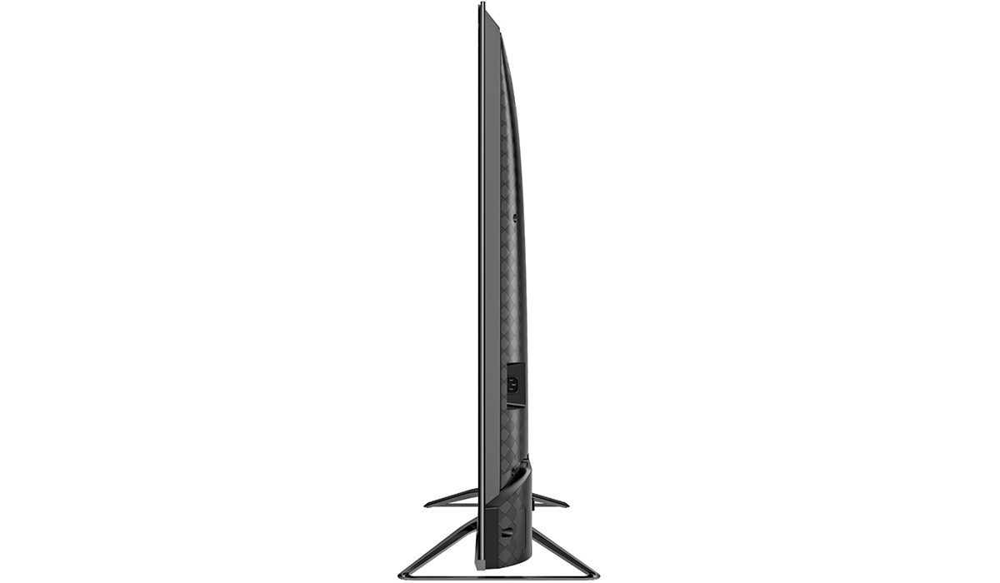

Introduction
The Hisense H9G was one of our favorite TVs of 2020, combining an excellent picture with a stylish design and hands-free Google Assistant for a very reasonable price. The company is following up this line with the U8G series, which is even brighter than the H9G and adds a number of gamer-friendly features to the mix. It’s also a fair bit more expensive, crossing the $1,000 mark with the 65-inch 65U8G model we tested retailing for $1,299.99. That’s still a very reasonable price for the features and performance you get, making the Hisense H9G our Editors’ Choice winner for midrange TVs.
A Slim, Stylish Design
The U8G has a gorgeous design, with an edge-to-edge glass panel framed by a silver band that rests just behind it, keeping the screen itself front and center. The bottom edge holds a narrow silver bezel with a small sensor array protruding down from the middle. The entire TV sits on two triangular gray metal legs that attach to the bottom, just a few inches past a third of the screen’s width from either direction, sitting significantly narrower than the TV itself and giving you more flexibility in where you can place it. You can also mount it on the wall.

With the exception of the power connector on the right side, all of the U8G’s ports sit on the left side of the back of the panel. Four HDMI ports, two USB ports (one 0.5A, one 1A), a 3.5mm composite video input, a 3.5mm headphone jack, and an antenna/cable connector face left. An Ethernet port, an optical audio output, and 3.5mm serial and service ports face directly back.
Android TV and Google Assistant
Most major streaming services are available, including Amazon Prime Video, Disney+, HBO Max, Hulu, Netflix, Twitch, and YouTube. However, while the Apple TV app is available on Google TV, it doesn’t currently work on Android TV, so you can’t run it on the U8G. Google Cast is integrated with Android TV, so you can stream from any Android phone or tablet, or a Chrome tab.
Google Assistant is built into Android TV and the U8G features far-field microphones for hands-free voice control. Just say, “Hey Google,” followed by a request, and the TV will respond accordingly. Google Assistant can search for content, provide general information like the weather forecast and sports scores, and control both the TV and a wide range of smart home devices. If you have an Amazon smart speaker, you can also control the TV with Alexa.
The Viewing Experience
BBC’s Planet Earth II looks excellent on the U8G. Bright subjects stand out as very bright, and shadows appear dark while still showing detail. Colors are vibrant and saturated, looking vivid but natural. The blues of water and greens of leaves all look full and colorful. Fine textures like fur and bark are easy to see in all lighting conditions.
The red of Deadpool’s costume in Deadpool looks vivid in the opening scene, without a hint of blueish tinting under the overcast lighting. The burning lab fight later in the film shows very bright flames and strong shadow detail, thanks to the TV’s contrast.
The party scenes in The Great Gatsby also look impressive on the U8G. White shirts and lights stand out, while the cuts of dark suits the and textures of dark hair are still visible without appearing washed out. Throughout the many high-contrast scenes in the film, skin tones look natural and nicely saturated.

Best In Class
The Hisense U8G is a fantastic TV for a reasonable price. It’s more expensive than the previous H9G line, but even crossing the $1,000 mark for the 65-inch model we reviewed, you’ll have a hard time finding a similarly priced TV that looks nearly as good. And even if you splurge on an OLED model like the Sony Master Series A90J, it won’t be nearly as bright as this one, earning the U8G our Editors' Choice award.
If you’re looking for a 65-inch TV under $1,000, or a 55-inch TV for far less, the TCL 6-Series remains one of our your best bets, as does the Hisense H8G. Just be aware that you’ll be compromising on brightness and contrast, and losing hands-free Google Assistant (and in the case of the TCL model, any voice assistant at all).
THE BOTTOM LINE
The Hisense U8G series is a bit more expensive than its predecessor, but it delivers more features and better picture quality than you'll get from any other TV in this price range.


Comment or Add your own review
Login | Sign Up